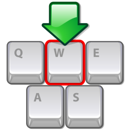
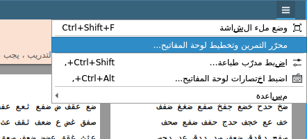
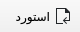
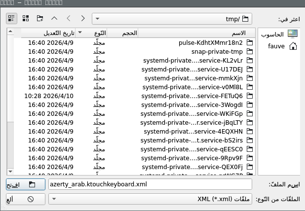
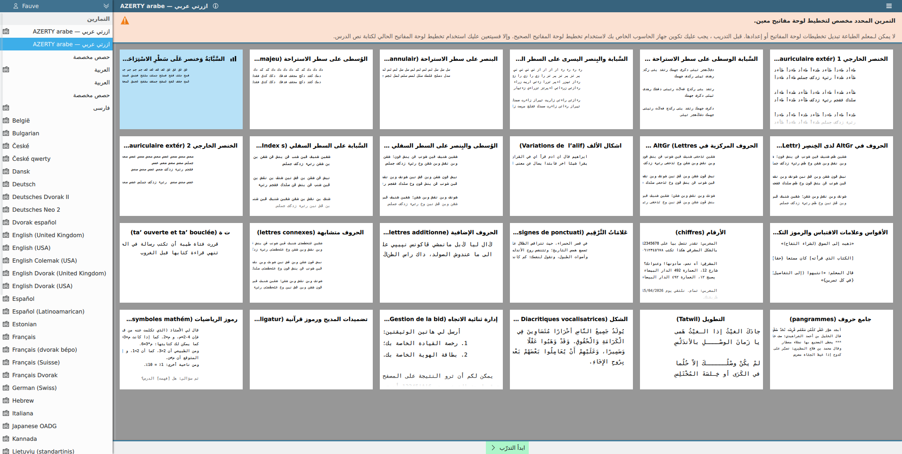
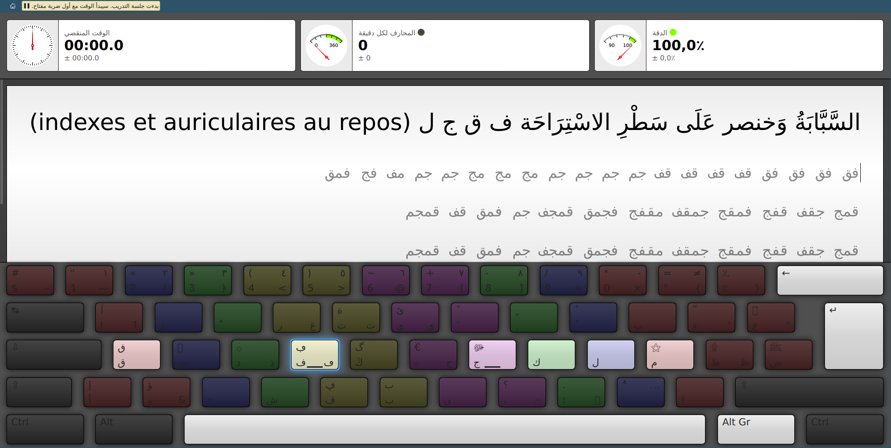

تخطيط لوحة المفاتيح ازرتي العربي يستهدف جميع أولئك الذين اعتادوا على الكتابة بـAZERTY لنصوصهم بالأبجدية اللاتينية. في الواقع، كم مرة كان من المزعج الضغط على المفتاح A وعدم الحصول على الحرف ا؟ هل سبق لكم أن انزعجتم قاىلون: «ليت هناك لوحة مفاتيح للحروف العربية حيث يكون كل حرف عربي على نفس المفتاح الذي يعادله في الحروف اللاتينية»؟ حسنًا، الازرتي العربي هي لوحة المفاتيح تلك.
⚓ استبدال صوتي

الازرتي العربي هو تخطيط لوحة مفاتيح للحروف العربية مبنية على مبدأ التراكب الصوتي. أي يتم ترتيب الحروف العربية بحيت كل حرف يقع على المفتاح الذي يتضمن، في التخطيط لوحة المفاتيح AZERTY الأصلي، على الحرف اللاتيني الأقرب صوتيًا منه.
على سبيل المثال، الحرف ا موجود على نفس مفتاح A، وب موجود على نفس مفتاح B، وك موجود على نفس مفتاح K، وما إلى ذلك.

⚓ الاختلافات الإملائية لنفس الحرف
تعرف بعض الحروف العربية أشكال مختلفة في رسمها مثل ت و ة. في هذه الحالات، يكون الشكل الرئيسي في وضع الوصول المباشر، بينما يكون النموذج الثانوي على نفس المفتاح ولكن في Shift.
⚓ الحروف متشابهة

في حالة وجود تعارض بين حرفين عربيين لهما إما نطق قريب من نفس الحرف اللاتيني (مثل د و ذ)، أو تصميم مماثل (مثل ط و ظ)، ويتعين عليهما مشاركة نفس المفتاح، في هذه الحالة يكون أحد الحرفين العربيين في الوصول المباشر بينما يمكن الوصول إلى الآخر في AltGr.
⚓ بعض الحالات غير بديهية
قدر الإمكان، تم إجراء التراكب الصوتي بطريقة تذكيرية قدر الإمكان. ومع ذلك، كان لا بد من التوفيق بين هذا المطلب وبعض قيود التوافر. ولهذا السبب تتطلب حالة بعض الحروف بعض التوضيحات للمستخدمين:
-
بالرغم من أن هذه الحالة لا تعارض بكتير البديهة، تمّ وضع الحرف ش على c.
لأنه، إذا كان s يبدو أكثر بديهية لـس الذي يُنطق /s/ بالفرنسية (وهو اللغة التى تكتب بالحروف الاتينية الأكثر شيوعًا والأكثر شهرة في البلدان العربية المعنية بـAZERTY)، يبدو أن الحرف c هو الحرف الثاني الأكثر شيوعًا لنسخ الصوت [ʃ] في اللغات الأخرى التي تكتب بالحروف اللتينيت؛ - الحرف و غير موجود في o، كما هو متوقع غالبًا، ولكن في w من أجل السماح للمفاتيح الثلاثة لرموز الشكل (ـَ ـِ ـُ) بالبقاء جنبًا إلى جنب؛
- الفتحة ـَ موجود في u لإبقائه جنبًا إلى جنب مع علامتي الشكل الأخريين؛
-
الحرف خ موجود في موقع x.
وذالك لأنه من ناحية، كان هذا المفتاح غير مشغل، ومن ناحية أخرى تبين الأمر جيدًا على أي حال لأن الصوت الذي يرتبط به الحرف خ، طبقي احتكاكي مهموس غالبًا ما يمثله الرمز x، سواء في ألفبائية صوتية دولية، أو حتى اللغات الأخرى التي تحتوي على هذا الصوت مثل χ في اليونانية الحديثة، وx في الروسية والأوكرانية، وx في الأذرية، وx في الكردية؛ - الحرف ع موجود في مكان $, لعدم وجود مقابل بين الحروف اللاتينية؛
- الحرف أ (الألف مهموزة الفوق) موجود في موقع < لعدم وجود موقع الأفضل؛
- كنتيجة طبيعية، يتم العثور على الحرف إ بشكل بديهي في Shift+أ.
⚓ الشكلين للأرقام

إذا ظلت الأرقام العربية قابلة للوصول المباشر بتهجئة المغاربية (0123456789)، فإن مرادفاتها المشرقية (٠١٢٣٤٥٦٧٨٩) تظل سهلة للوصول بواسلة Altgr+Shift.
⚓ رموز الشكل

تم جمع علامات الشكل ـَ ـِ ـُ معًا على المفاتيح جنبًا إلى جنب بطريقة تذكيرية وبديهية، مع احترام قدر الإمكان مبدأ التراكب الصوتي الذي يحكم الكل. بطبعة الحال، علامة التنوين ـً ـٍ ـٌ متاحة أيضا في Shift لمرادفاتها العادية.
الإستثناء الوحيد لي هذه القاعدة هو السكون ـْ الذي لا يعتبر من أي حال كحركة الشكل حقيقيًا لأنه بحكم تعريفه يمثل غياب النطق، ويتم نقله بعيدًا عن كتلة حراكات الشكل إلى موقع E. وهذا أمر جيد على أي حال، لأن حرف e في اللغة الفرنسية له لفظ لا يقترب من أي صوت عربي إلا عدم وجود أي صوت، أي السكون بالضبط.
⚓ الحروف الإضافية

تتوفر الحروف الإضافية للغة العربية پ /p/، ڤ /p/، ڭ /g/ المستخدمة في نسخ أصوات اللغة العربية المعاصرة، اللهجات العربية، كما تتوفر اللغات الأخرى المكتوبة بالحرف العربيت (مثل الأردية أو الباشتو أو الأويغور) بدلاً من معادلتها اللاتينية في AZERTY الأصلية, أي بالترتيب P، وP، وG.
⚓ التطويل
الرمز «ـ» المعروف بـالتطويل (ويعرف أيضاً بالفارسيةبإسم كشيدة) أي تطويل الروابط بين الحروف مما يسمح بإنحياز النصوم، خاصة في الشعر مثل في «جــــــــــــــــــــادك الغيث» وهو موجود في Shift+AltGr+حيز.

⚓ الرموز التكميلية
![[] () {}](./images/complementary-symbols.svg)
هل سبق لك أن تساءلت «لماذا لا يوجد قوس الإغلاق هذا بجوار قوس الفتح»؟ حسنًا، لن تسأل نفسك مثل هذا السؤال من الآن فصاعدًا. الرموز التكميلية مثل ()[]{}«» تقع جميعها جنبًا إلى جنب بشكل بديهي.
⚓ تضميدات المدح و خصوميات قرآنية
من ناحية أخرى، فإن الكتابة العربية، سواء الخطية أو المطبعية، مغرمة بالأحرف المركبة المزخرفة، خاصة بالنسبة للصيغ المدح، وقد تم دمجها في اللازرتي العربي، كما تمّ دمج أيضا الخصوصيات القرآنية. وبالطبع، هنا مرة أخرى، وفقًا لمبدأ البديهة الذي يحكم تصميم الازرتي العربي، يمكن الوصول إلى كل الرموز مدح، التى تختصر عبارة أو جملة، في Shift متبوعًا بالحرف الأول من هذه العبارة أو الجملة.
على سبيل المثال، الرمز «ﷺ» الذي يتضمن العبارة صَلَّى اللّٰهُ عَلَيْهِ وَسَلَّم، والذي يبدأ بالحرف ص، يمكن الوصول إليه في Shift+ص.
| الرمز | تركيب المفاتيح | النسخ الممتد |
|---|---|---|
| ﷻ | Shift+ج | جل جلاله |
| ﷿ | Shift+ع | عزّ وجلّ |
| ﷾ | Shift+س | سبحانه و تعالى |
| ﷺ | Shift+ض | لَّىٰ اللّٰهُ عَلَيْهِ وَسَلَّم |
| ۩ | Shift+ط | سجدة التلاوة |
| | Shift+، | نهاية الآية |
⚓ الرموز المتنوعة

تتوفر الرموز المستخدمة في الكتابة والنشر العربي بالإضافة إلى الرموز المعاصرة مثل الإشارات النقدية أو تلك اللازمة للحوسبة.
⚓ الخصوصيات المغاربية التاريخية

الاختلافات التاريخية في المغرب العربي، على الرغم من أنها لا تزال تستخدم في بعض المنشورات القرآنية فقط، وهي حرف ف في النقطت المنخفضة «ڢ» وحرف ق في النقطة المرتفعة «ڧ» يمكن الوصول إليها من خلال Shift من مرادفاتهما العادية.
أو بالتفصيل:
| Shift+ف | ڢ (ف مغربي) |
| Shift+ق | ڧ (ق مغربي) |
⚓ الحيز غير المقطوع
الحيز غير المقطوع هو علامة مطبعية، وبالضبط حيز يتم وضعه بين كلمتين، أو كلمة وعلامة مطبعية، مما يمنعهما من الانفصال عندما يجدان نفسيهما في نهاية السطر. وهذا يمنع علامات مثل : أو ; أو ! أو ? من أن تقع في بداية السطور، حيت تصبح يتيمة الجمل التي من المفترض أن تتخللها علامات الترقيم.
وفي اللغة العربية على وجه الخصوص، يمكن أن يقدم العديد من المزايا، أبرزها مراعاة العبارات التي تتطلب كتابتها إملائياً في كلمتين ولكن ليس لطيف العثور عليها في سطرين. مثل «ابن بطّوطة»، أو «أبو هريرة»، أو حتى التَّصْلِيَةُ مثل «محمّد ﷺ» الذينن، على وجه التحديد، يمكن أن يجدو نفسهم منقسمون بين صطرين.

في هذه الحالة، الحيز غير المقطوع، الذي يمكن الوصول إليه في Shift+إزاحة، الموضوع بين الكلمتين أو رمزي العبارة يسمح بإبقائهما دائمًا جنبًا إلى جنب.
وهكذا، في المثال السابق، كتابة «ابن⍽بطّوطة» تضمن بقاء العبارة موحدة على نفس السطر في أي موقف. حيث يمثل الرمز «⍽» فقط، لأسباب تتعلق بالوضوح، الحيز غير المقطوع والذي من الواضح أنه غير مرئي وغير قابل للطباعة.

⚓ إدارة ثنائية الاتجاه (ستحبوا ذالك)
⚓ المبدء
هل ترو تلك الحالة التي يتغير فيها أتجاه الكتابة دون أن تفهموا ما يحدث أو كيفية إصلاحه؟ أن الأرقام أحيانًا تنتقل من اليمين إلى اليسار، أو حتى في كل الاتجاهات، وأن الكلمات تكتب في الاتجاه المعاكس، وأحيانًا حتى الحروف؟ لا شك.
حسنًا، يقدم الازرتي العربي حلاً لهذا الأمر. أو بتعبير أدق، الحل كان موجود بالفعل ولا يوفر الازرتي العربي سوى إمكانية الوصول إليه.
في الواقع، على خ، م، ل، وك توجد رموز Unicode غير مرئية مما تسمح لكم بضبط اتجاه الكتابة.
| الرمز | المفتاح | الوصف |
|---|---|---|
| LRI | Altgr+خ | إجبار اليصار←يمين |
| RLI | Altgr+م | إجبار يمين←اليصار |
| FSI | Altgr+ل | إتجاه تلقائي |
| PDI | Altgr+ك | نهاية الإجبار |
⚓ إجبار إتجاه الكتابة من يمين إلى اليصار
لنفترض أنكم تريدون كتابة نص كامل باللغة العربية، وبالتالي من اليمين إلى اليسار بالكامل، ويتضمن رموزًا مختلفة، بما في ذلك النقطتين «:» والترقيم بالأرقام في بداية الجمل.
فمن المحتمل أنكم تحصلون على نتيجة مقلوبة مثل هذا:

على حسب الواجهات الرقمية والأنظمة والبرامج التى تستعملون، غالبًا ما تكون النقطتان اللتان كتبتهما في نهاية السطر (على اليسار) موجودة في بداية السطر (على اليمين). في حين أن أرقام التعداد المفترض أن تكون في بداية السطر (على اليمين)، توجد في نهاية السطر (على اليسار).
⚓ الحلّ
ما تحتاجه بعد ذلك هو الإشارة إلى أنه يجب كتابة الجملة بأكملها من اليمين إلى اليسار، مهما كانت التحليلات الخوارزمية.
ومع ذلك، بفضل حرف التحكم ثنائية الاتجاه RLI (فرض الكتابة المحلية من اليمين إلى اليسار)، الموجود عن طريق إدخال Altgr+م، في بداية الجملة، ستشيرو إلى الخوارزمية أنه سيتم تنسيق الجملة بأكملها من اليمين إلى اليسار.
ستحصلو بعد ذلك على نتيجة مرضية أكثر مثل هذا:

علاوة على ذلك، يمكنكم أيضًا رؤية النتيجة في المتصفح:
أرسل لي هاتين الوثيقتين: 1. رخصة القيادة الخاصة بك؛ 2. بطاقة الهوية الخاصة بك.
⚓ إجبار إتجاه الكتابة من اليصار إلى يمين
من ناحية أخرى، لنفترض أنكم تريدو ا كتابة نص باللغة العربية، ولكن يحتوي على جزء يجب كتابته محليًا من اليسار إلى اليمين (مثل لوحة الترخيص أو عنوان البريد الإلكتروني أو أي نص آخر يجب أن يحتوي على رموز لاتينية أو سيريلية أو يونانية).
فمن المحتمل أنكم تحصلون على نتيجة مقلوبة مثل هذا:

وذلك بفضل حرف التحكم ثنائية الاتجاه LRI بالضغط عن Altgr+خ (إجبار الكتابة من اليسار إلى اليمين محليًا) وPDI بالضغط عن Altgr+ك (نهاية كتلة التأثير والعودة إلى اتجاه الكتابة الأصلي للجملة)، يمكن لكم تأطير الكتلة التي تحتوي على المقطع 12345|A|6 لإجبار هذا الجزء على اتباع الاتجاه من اليسار إلى اليمين.

يمكن لكم أن ترو النتيجة على المصفح «رقم لوحة الترخيص هو 12345|A|6 أضن».
⚓ التدريب

تم تصميم الازرتي العربي بحيث لا تحتاجوا إلى أي تدريب، أو على الأقل ليس الكثير من التدريب، لأنكم كمستخدمي الازرتي العربي، من المفترض أن تكونوا على دراية بـ AZERTY الاصلي، على الرغم من بعض الاختلافات التي ليست بالضرورة بديهية.
ومع ذلك، لن يكون من غير المجدي التدرب على الكتابة بالازرتي العربي خصيصا والتعرف على التفاصيل الدقيقة التي يمكن أن توفرها، والخصوصيات التي تجلبها فيما يتعلق بكتابة الأبجدية العربية.
ولهذا الغرض، تم تصميم دروس الكتابة لبرنامج الكتابة الحر KTouch والمتوفر أصلاً ضمن نظام لينكس.
يمكنكم تثبيت KTouch من رابط البرنامج الرسمي. ومع ذلك، فإن تخطيط الازرتي العربي غير متوفر تلقائيا. لذلك عليكم إضافته يدويًا.
للقيام بذلك، قموا بتنزيل الملفين، ملف تخطيط الازرتي العربي، وملف الدروس التدريبية الخاصة به:
wget https://fauvenoir.github.io/azerty-arab/training/azerty_arab.ktouchkeyboard.xml https://fauvenoir.github.io/azerty-arab/training/azerty_arab.ktouchlesson.xml
ثم قموا باستيراد هذين الملفين إلى KTouch, ولي هذا:
- نفذوا KTouch؛
- انقروا على الزر الذي يحتوي على ثلاثة خطوط أفقية في أعلى اليمين؛
- انقروا على «محرر التمرين وتخطيط لوحة المفاتيح…»، ستظهر نافذة؛
- في هذه النافذة، انقروا على زر «استورد»؛
- حددوا موقع الملف
azerty_arab.ktouchkeyboard.xml؛ - في هذه المرحلة، نفترض أن تمّ تثبيت ملف تخطيط لوحة المفاتيح؛
- أعدوا النقر على زر «استيراد»؛
- حدد موقع ملف
azerty_arab.ktouchlesson.xml. في هذه المرحلة، يجب أن تكون ملفات التدريب مثبتة بشكل جيّد؛ - الآن عدوا إلى النافذة الرئيسية، وفي قائمة الدروس التدريبية الموجودة على اليسار، أنقروا علي «AZERTY arabe — ازرتي عربي»؛
- ابدؤا أول درس.






⚓ الأسئلة الشائعة
- هل يجب أن أشتري لوحة مفاتيح تحمل علامة الازرتي العربي؟
-
لا.
لا فائدة لي ذالك. إذا كان لديكم حقًا الأموال الإضافية لإنفاقها، فتبرعو لي على پايپال، أو ليبيراپاي، أو پاطريون، أو اشتر لي قهوة على كو-في. - هل يجب أن أشتري ملصقات لي الازرتي العربي وألصقها على لوحة المفاتيح الثى استعمل؟
- لا، وكما قلت أعلاه لا فائدة لي ذالك. إذا كان لديكم حقًا الأموال الإضافية لإنفاقها، فتبرعو لي على پايپال، أو ليبيراپاي، أو پاطريون، أو اشتر لي قهوة على كو-في. (أنا مُصر للغاية 😂)
- لقد اعتدت على كتابة العربية بالتخطيط «ضصثقف»، أو أي تخطيط آخر للعربية. فهل يجب أن أتخلى عنه وأستخدم الازرتي العربي؟
-
أولا، قومو بما تريدو، لن يجبركم أحد 😹! إذا كنتم معتادي بالفعل على تخطيطاً تتقنه جيدًا، فقد يكون من الأفضل الاحتفاظ بهذا التخطيط.
من ناحية أخرى، تم تصميم الازرتي العربي لأولئك الذين اعتادوا على AZERTY اللاتيني ويشعرون بالانزعاج من الاضطرار إلى تعلم تخطيط جديد يتعارض مع عاداتهم. - هل يمكنني استخدام الازرتي العربي على أنضرويض أو إويس أو أنظمة تشغيل الأجهزة المحمولة الأخرى؟
-
في الوقت الحالي، أعمل على إصدار الازرتي العربي عن نظام التشغيل أنضرويض، لكن لا يمكنني الإعلان عن تاريخ الإصدار.
من ناحية أخرى، بالنسبة لنظام إويس، لا أعتقد أنني سأهتم بالأمر لأن كل شيء دائمًا ما يكون معقدًا للغاية على أجهزة الشركة المصنعة «أبل»، ولكن لا شيء يمنعكم من المساهمة في المشروع من خلال التكلف بالتكيف بنظام إويس. - هل يمكنني استخدام الازرتي العربي على أنظمة تشغيل أخرى أو منصات أقل شيوعًا (DOSBox، GRUB، OpenWrt)؟
- في الوقت الراهن لا. ولكن إذا سألتني بفتح تذكرة على «جيتهوب»، فربما سأهتم بالأمر.
- هل يمكنني استخدام الازرتي العربي لكتابة لغات أخرى غير العربية؟ وهذا يعني لهجات العربية والفارسية والأردية والأويغورية وما إلى ذلك؟
-
بالطبع. يسمح لك تخطيط لوحة المفاتيح بإدخال الأبجد العربي، مهما كانت اللغة التي تريد استخدام هذا الأبجد لها.
ميم پوغ إكريغ لو فرونسي، سي تو ڤو!
ڤين زي موشثن كونان زي زوڭار ضويتش شغايبن! - أواجه بعض الصعوبات في استخدام لوحة المفاتيح الازرتي العربي، كيف يمكنني تحسين إتقاني لها؟
- في الوقت الحالي، البرنامج ليس جاهزًا بعد، لكن أعمل على توفير أوراق التدريب على برنامج KTouch. عدو إلى هذه الصفحة بانتظام لمعرفة الجديد.
- أود أن أعدل الازرتي العربي لتكييفه مع بعض الاحتياجات الشخصية، هل هذا ممكن؟
- نعم بالطبع. تم تصميم الازرتي العربي باستخدام مساعد التصميم التخطيطي Kalamine — برنامج حرّ —. يإمكنكم استنساخ المستودع للازرتي العربي على «جيتهوب» وتعديله كما يحلو لكم.
⚓ ما لازال يجب القيم به
- تصميم ملفات التدريب الخاصة بـKTouch؛
- توثيق حالة الحروف المركبة للمدح؛
- إنشاء خريطة لوحة المفاتيح لـ KTouch تلقائيا؛
- إدماج مفتاح التعديل اللاتيني الميت؛
- إنهاء ورقة التدريب على المدايح والخصوصيات القرآنية لبرنامج KTouch؛
- تكييف برنامج التشغيل مع Android؛
- قيم بمراجعة الوثائق.
⚓ حرد المتن
مشروع أزرتي عربي يقوده إدريس الإدريسي الملقب بالقيوط طوعًا.
إذا كنتم تحبو هذا المشروع أو ترغبو في دعمه، فتبرعو على پايپال، أو ليبيراپاي، أو پاطريون، أو باشتر قهوة على كو-في.
{kind=link}